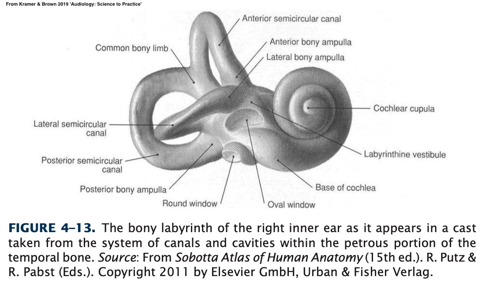
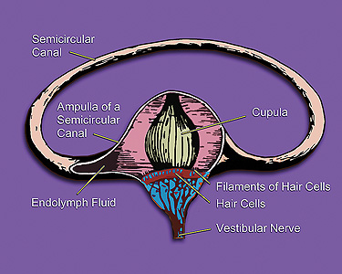
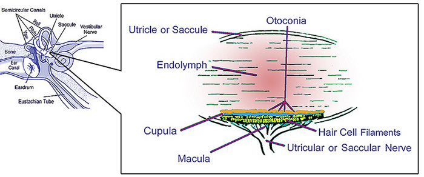
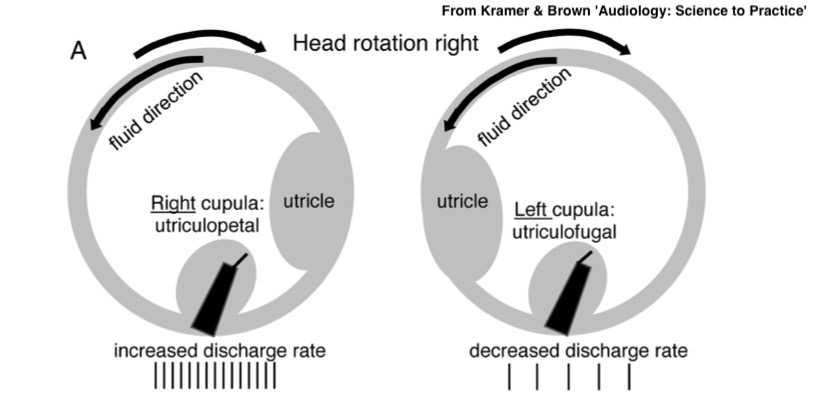
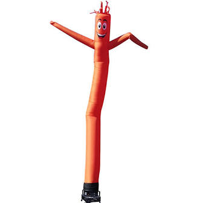

# The Vestibular System ### Will Styler - LIGN 113 --- ### Today's Plan - The Anatomy of the Vestibular System - How do we sense rotation? - How do we sense head position? - How do we sense linear acceleration? - Balance and Orientation beyond the Vestibular System - Symptoms of Vestibular Disorders --- ## Any questions? --- ### This isn't a well-balanced introduction - This could be a whole quarter - Instead, it's 45 minutes - We'll just hit the high points --- ## The Anatomy of the Vestibular System --- ### We've been seeing the vestibular system all quarter! <img class="r-stretch" src="hearing/outerear.jpg"> --- ### It's all a part of the inner ear! <img class="r-stretch" src="hearing/bony_labyrinth.jpg"> --- <img class="r-stretch" src="hearing/cochlea3d.gif"> By © Nevit Dilmen, CC BY-SA 3.0, https://commons.wikimedia.org/w/index.php?curid=45700841 ---  --- ## The Vestibular Anatomy --- ### The Semicircular Canals --- ### The Semicircular Canals - These detect rotational motion - Three loops ('Superior', 'Posterior', and 'Horizontal') - These are roughly orthogonal to one another - Filled with endolymph - Yes, the same endolymph, with the same K+ content! --- ### The Ampullae <img class="r-stretch" src="hearing/vestibular_anatomy.jpg"> --- ### The Ampullae - Each canal has an ampulla - Within it is the crista ampullaris - This is a mass of stereocilia with a gelatinous 'cupula' on top - The cupula has a very specific density, so it's neutrally buoyant within the endolymph - This keeps gravity from affecting it! --- ### The Ampulla  --- ### The Utricle and Saccule <img class="r-stretch" src="hearing/vestibular_anatomy.jpg"> --- ### The Utricle and Saccule - Sense horizontal (utricle) and vertical (utricule) acceleration and static tilt - A 'bed' of hair cells with the 'otolithic membrane' on top - On the otolithic membrane are otoliths - Also known as "otoconia" and "statoliths" - Little crystals of Calcium Carbonate --- ### The Utricle and Saccule  --- ### The Vestibular Nerve <img class="r-stretch" src="hearing/bony_labyrinth_withcochlea.jpg"> --- ## How do we detect rotation? --- ### The Semicircular Canals --- ### The three canals provide three axes worth of data - One canal doesn't give enough information - If you can detect rotation on each, you have a 3D model - Especially combined with the other ear! - ... but how do we detect the rotation? --- ### When the head moves, the fluid moves too - ... but not at the same time - Fluids have inertia in tubes - To detect rotation, just detect the fluid moving in the ear! --- ### The Ampullae and Cristae --- ### The Cristae transduce fluid movements into nerve signals - The Cupula is a gelatinous 'sail' on top of the stereocilia - When the fluid moves, it pushes the cupula - When the cupula moves, the stereocilia are deflected --- ### Hair cells work similarly to the IHCs in detecting the signal - Movement opens of hair cell tip links - Ion Concentrations inside the cell change - The cell depolarizes, and the nerve firing rates increase --- ### This works bilaterally  --- ### Bilateral Information - Opposite 'ears' provide opposite effects - Fluid motions are reversed because the orientation is reversed - "Right is discharging more, left is discharging less" --- ### ... but we're missing something - Rotation is not orientation - "How do you know what direction's up when you just woke up?" - We also need to be able to sense acceleration - "I'm not turning, but the elevator's going up" --- ## How do we sense head position? --- ### There's one really useful fact about evolving on a planet --- ### Gravity! - Maybe you've noticed it - That force that makes things accelerate towards the Earth at around 9.8 m/s/s - We can use this for positional reckoning --- ### The Non-Ear Way - "Huh, when I stick my arm out it, it's wanting to move that way" - "That direction must be down!" - Similar sensations are available to the legs, and head too! --- ### The Utricle and Saccule do the same thing - "Let's use streocilia to detect the pull of gravity!" - The Utricle and Saccule have beds of stereocilia positioned on the vertical and horizontal planes - The stereocilia do exactly what we expect them to do with ions and tip links and such - The stereocilia should bend towards gravity --- ### ... but there's a problem - Stereocilia are very lightweight! --- ### Enter the Otoliths - The Otoliths are little tiny ear rocks ('otoliths') - They're attached to the membrane atop the stereocilia - Literally their only role is to be a bit heavy - Changes in position cause gravity to pull on the otoliths differently --- ### Changes in position change the firing patterns - In the utricle, neutral vertical head position produces a baseline - Leaning one direction, gravity bends the stereocilia, opening tip links, depolarizing and firing - Leaning the other way, gravity bends the stereocilia the other way, closing tip links and hyperpolarizing - Head position is interpretable from the combination of activation states of the utricule and saccule --- ### This is a constant feed - (Meaningful) data only comes from the Cristae when there's rotation - We are constantly getting orientation data from the utricle and saccule - You never don't know which way is up! - ... but rotation's not the only kind of movement that we care about --- ## How do we sense linear acceleration? --- ### We sense rotational movement with the cristae - Movement around the axis of a semicircular canal produces endolymph flow - But linear movement doesn't - The fluid just presses against the walls of the rings - How do we detect linear movement? --- ### Evolve sensation of position, get linear acceleration for free!  --- ### The Utricle and Saccule can detect linear acceleration caused by gravity - ... but they can detect other acceleration at the same time - Both in strength of movement and in directionality - "Both the Utricle and the Saccule are firing? We must be accelerating on two axes!" - "... and only one of those can be gravity" - This allows us to sense vertical and horizontal acceleration! --- ### What a great deal! --- ## Balance and Orientation beyond the Vestibular System --- ### The Vestibular System is only part of the balance story - The human brain is amazing at integrating matrices of sensory information - The vestibular system provides useful data, but it's not the only data --- ### Musculoskeletal, Proprioceptive, and Tactile Information - "Huh, when I relax my arm, it goes that way" - "One side of my neck is extended, the other side is compacted" - "I'm abruptly feeling greater weight on my feet without moving any part of my body" - "My clothes are tight against me here, and draped away there" --- ### Visual balance and position perception - "Which direction is the horizon going?" - "Hmm, I don't think that tree and the ground it's on are actually rotating in space" - "Huh, I moved my head and the whole world turned. Am I a wizard?" --- ### When these things are 'out of sync', we hate it - 'Motion sickness' comes from vestibular and proprioceptive registration of motion without visual motion - "VR nausea" can come from visual registration of motion without vestibular or tactile - When the vestibular system is giving bad information, we have a big problem! - Because lots of normal reflexes rely on it! - Speaking of which... --- ### The Vestibulo-Ocular Reflex - Our vestibular system interacts with our visual senses - When the head moves, the vestibular system feeds motion commands directly to the eyes - "Move with me if you want to remain fixated on a distinct point" - When the vestibular system is working poorly, this causes Nystagmus! - Unexpected eye movements which are very diagnostic... --- ## Symptoms of Vestibular Problems --- ### Nystagmus - Which is both indicative, and annoying - Causes visual disruption and is not pleasant --- ### Balance issues - Difficulty registering absolute position - Falling and tipping --- ### Vertigo - Dizziness with rotation - Often accompanied by nystagumus --- ### Nausea and Vomiting - Obviously --- ### Hearing loss often co-occurs - "Wow, diseases which affect stereocilia and endolymph-driven sensory apparati often affect hearing too!" --- <img class="r-stretch" src="img/surprisedpikachu.jpg"> --- ### Vestibular problems are very problematic - Vertigo and balance issues make for a difficult life - We can manage the causes sometimes with medication - In some severe cases, the vestibular system is disabled - Either chemically or by cutting the associated nerves --- ### The Vestibular Nerve <img class="r-stretch" src="hearing/bony_labyrinth_withcochlea.jpg"> --- ### Luckily, most causes of deafness don't affect the vestibular system - ... and it's unusual that it has troubles - Save for a few diseases and ototoxic drugs --- ### We'll talk more about the causes of vestibular problems next time! --- ### Wrapping up - The vestibular system helps us sense rotation, position, and linear forces - The semicircular canals handle rotation - The utricle and saccule handle position and linear acceleration - The body uses more than just the vestibular system to do balance - ... but we sure want the vestibular system to be working properly! --- ### For Next Time - We'll think about the physiology we've discussed in application! --- <huge>Thank you!</huge>